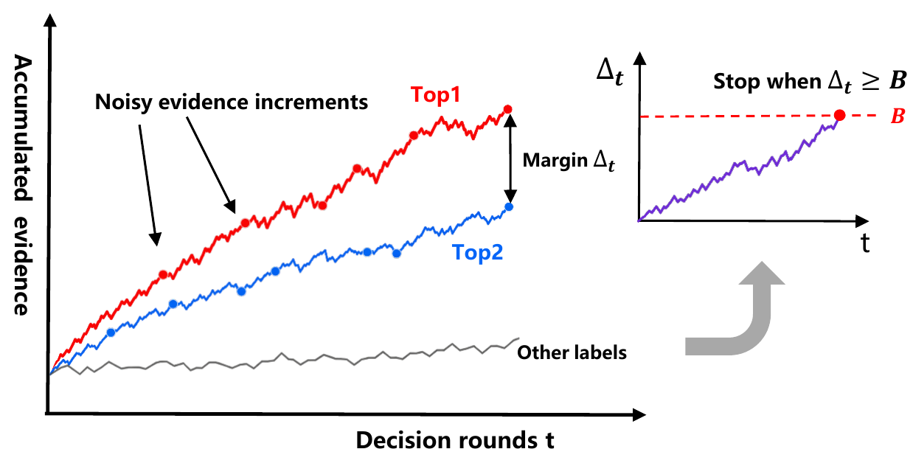
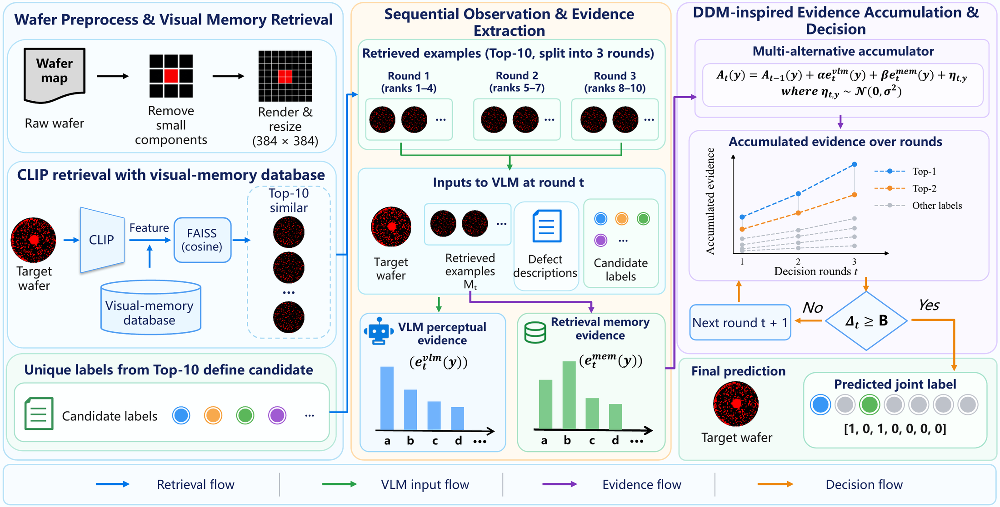
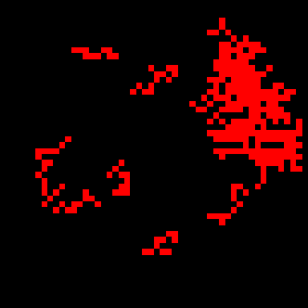
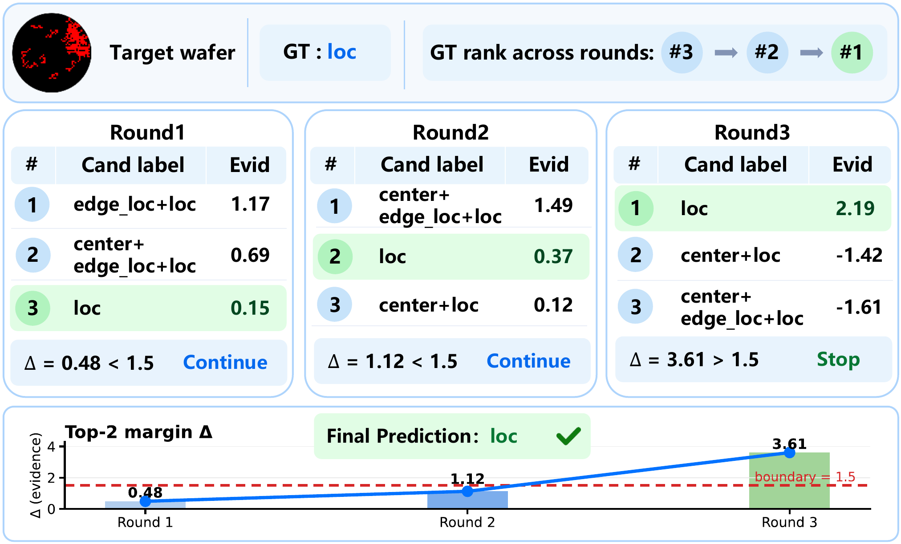

A training-free framework that treats VLM responses as noisy observations, retrieves similar wafers as visual-memory cues, and accumulates evidence over valid joint defect states until the top-two margin reaches a decision boundary.

Mixed-defect wafer recognition requires predicting a complete multi-hot joint state rather than one isolated class. DDM-VLM uses retrieval as visual-memory conditioning, VLM output as perceptual evidence, and a multi-alternative accumulator as the final decision mechanism.
Pure RAG uses the same retrieved visual memory but makes one VLM interaction and directly adopts its response.
Retrieved observations are split across rounds; perceptual and memory evidence are accumulated until the boundary is met.
Similar wafers are retrieved as visual-memory cues and their labels define a compact candidate space. Successive observations provide VLM perceptual evidence and retrieval-memory evidence, which are accumulated over valid joint states until the decision becomes sufficiently separated.

Each trajectory shows how candidate rankings and evidence margins evolve across decision rounds, including correction at later rounds and adaptive early stopping.

A concrete example of sequential correction rather than one-shot commitment.

Under the main 8:2 split, Pure RAG controls for retrieval while DDM-VLM adds sequential evidence accumulation and adaptive stopping under the same retrieval condition.
Evidence ablation and data-split experiments characterize the contribution of each evidence source and the robustness of DDM-VLM.
VLM perceptual evidence is the primary signal; retrieval memory provides complementary support.
| Split / Method | Qwen | mPLUG | Llama | InternVL |
|---|---|---|---|---|
| 9:1 · Pure RAG | 54.97 | 51.92 | 43.71 | 45.26 |
| 9:1 · DDM-VLM | 55.89 | 56.50 | 52.68 | 53.63 |
| 8:2 · Pure RAG | 52.92 | 50.13 | 41.52 | 44.69 |
| 8:2 · DDM-VLM | 54.53 | 53.78 | 50.63 | 51.35 |
| 7:3 · Pure RAG | 54.06 | 50.71 | 41.80 | 46.90 |
| 7:3 · DDM-VLM | 55.35 | 56.38 | 51.42 | 52.80 |
DDM-VLM combines visual memory, multi-round evidence accumulation, and boundary-based adaptive stopping for training-free mixed-defect recognition.